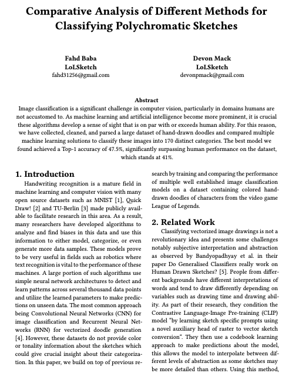

Comparative Analysis of Different Methods for Classifying Polychromatic Sketches
Abstract
Image classification is a significant challenge in computer vision, particularly in domains humans are not accustomed to. As machine learning and artificial intelligence become more prominent, it is crucial these algorithms develop a sense of sight that is on par or exceeds human ability. For this reason, we have collected, cleaned, and parsed a large dataset of hand drawn doodles and compared multiple machine learning solutions to classify these images into 170 distinct categories. The best model we found achieved a Top-1 accuracy of 47.5%, significantly surpassing human performance on the dataset, which stands at 41%.
arXiv